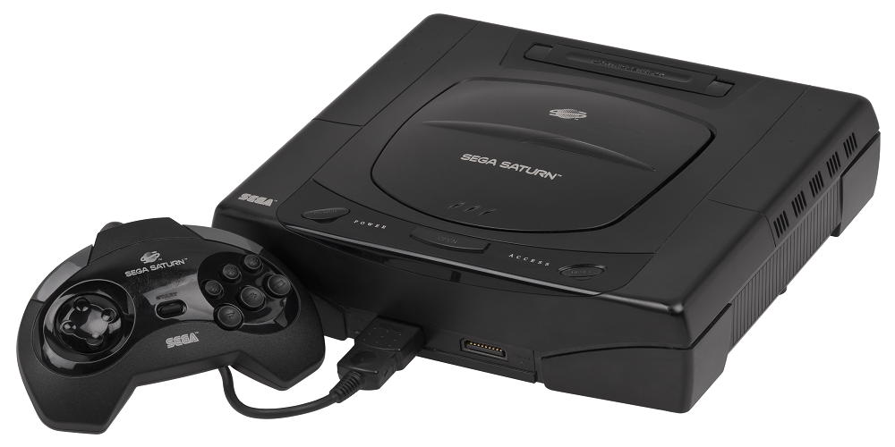
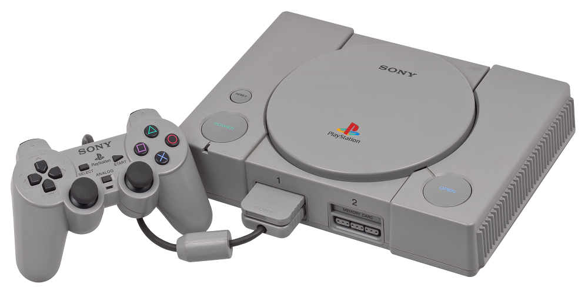

Quinta Generación 1993 - 1998
Más conocida como la "era de los 32 bits" aunque ocasionalmente algunas personas se refieren a esta generación como la "era de los 64 bits" puesto que Nintendo lanzaría dos años más tarde un sistema que rompería ese apodo, se trata de la consola Nintendo 64; raramente se le llama también la "era 3D" Se trata de una generación que supuso el paso de los 2D a los entornos tridimensionales 3D y comenzó en el año 1994 cuando SEGA lanzó su Sega Saturn y Sony su PlayStation, la cual supuso el debut de esta compañía en el mundo de los videojuegos.
Atari Jaguar
Fue la última videoconsola doméstica desarrollada por la empresa de videojuegos Atari. Fue lanzada al mercado en 1993 con la pretensión de desplazar a las consolas dominantes de aquel entonces (Mega Drive, Super Nintendo y Neo Geo) y hacerse con un mayor porcentaje del mercado de videojuegos. En Diciembre de 1993, la Atari Jaguar se convirtió en el primer sistema de videojuegos de 64 bits distribuido en el mundo.

Satur
La Saturn es una videoconsola de videojuegos de Sega, sucesora de la Mega Drive, lanzada en Noviembre de 1994 en Japón con tecnología 32 bits y soporte CD-ROM. Disfrutó de conversiones de recreativas de Sega, sobre todo de Model 2, y de juegos exclusivos de la propia compañía. Gran potencia para juegos en 2 dimensiones (2D, sprites) y eficientes recursos para las 3 dimensiones (3D, polígonos).
PlayStation 1ps1
Es la primera videoconsola de Sony, y la primera de dicha compañía en ser diseñada por Ken Kutaragi, y es una videoconsola de sobremesa de 32 bits lanzada por Sony Computer Entertainment. Se considera la videoconsola más exitosa de la quinta generación tanto en ventas como en popularidad
nintendo64
es la cuarta videoconsola de sobremesa producida por Nintendo, desarrollada para suceder a la Super Nintendo y para competir con el Saturn de Sega y la PlayStation de Sony.Incorpora en su arquitectura un procesador principal de 64 bits. El soporte de almacenamiento de los juegos es en forma de cartuchos, la mayoría de ellos con memoria interna. El uso de este tipo de almacenamiento le supuso una seria desventaja comercial frente a sus competidores, ya que encarecía los costes de producción lo que aumentaba el precio final, y además, era de una capacidad de almacenamiento menor al de un CD-ROM.

game boycolor
Videoconsola portátil de la quinta generación de la familia de sistemas de videojuegos de Nintendo Game Boy, esta portátil es la competidora principal de la PocketStation de Sony, y la Neo Geo Pocket Color de SNK. Una particularidad de esta consola es ser la primera compatible con su antecesora, así que los antiguos juegos de la Game Boy clásica pueden correr en esta nueva Game Boy e incluirles color de un modo similar al Super Game Boy.